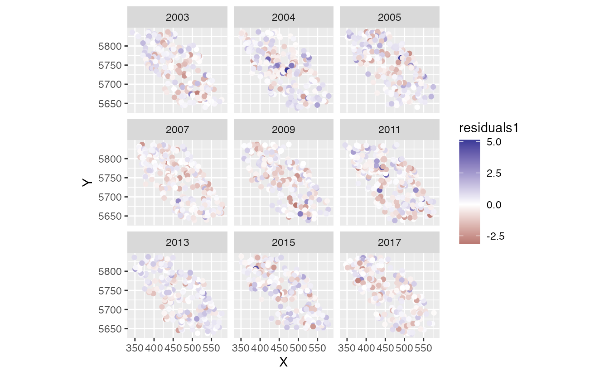
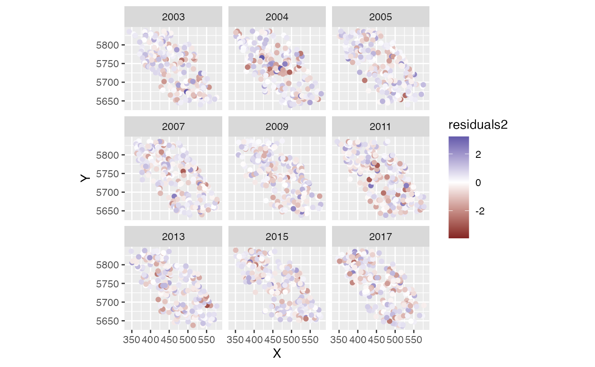
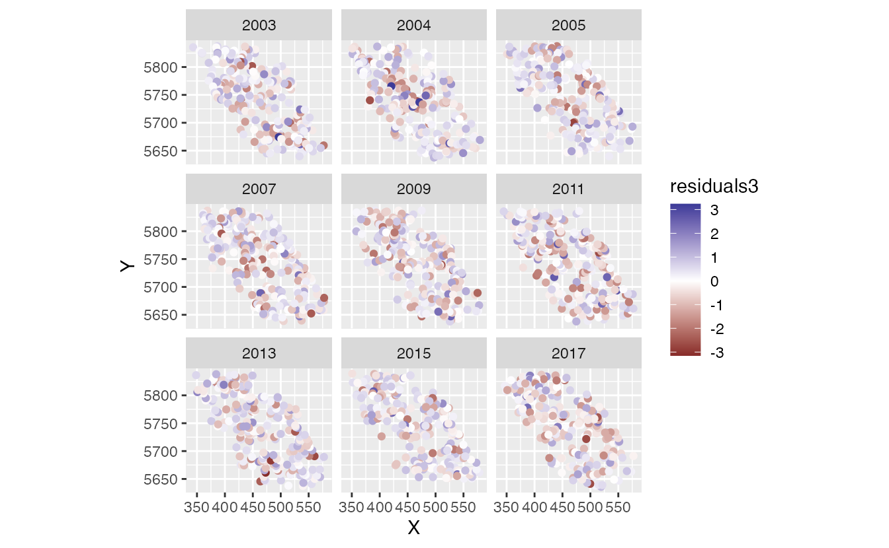

Fitting spatial trend models with sdmTMB
2021-05-14
Source:vignettes/spatial-trend-models.Rmd
spatial-trend-models.RmdUsing the built-in British Columbia Queen Charlotte Sound Pacific Cod dataset, we might be intererest in fitting a model that describes spatially varying trends through time. The data are as follows:
- There are columns for depth and depth squared.
- Depth was centred and scaled by its standard deviation and we’ve included those in the data frame so that they could be used to similarly scale the prediction grid.
- The density units should be kg/km2.
- Here, X and Y are coordinates in UTM zone 9.
We will set up our SPDE mesh with only 100 knots so that this vignette builds quickly. In reality you would likely want to use more.

Let’s fit three models. First we will fit a model that includes a single intercept spatial random field and another random field for spatially varying slopes the represent trends over time in space. Our model just estimates and intercept and accounts for all other variation through the random effects.
m1 <- sdmTMB(density ~ 1, data = pcod,
spde = pcod_spde, family = tweedie(link = "log"),
spatial_trend = TRUE, time = "year",
spatial_only = TRUE)In the second model we will add independent spatiotemporal random fields for each year:
m2 <- sdmTMB(density ~ 1, data = pcod,
spde = pcod_spde, family = tweedie(link = "log"),
spatial_trend = TRUE, time = "year",
spatial_only = FALSE)In the third model we make the spatiotemporal random fields follow an AR1 process:
m3 <- sdmTMB(density ~ 1, data = pcod,
spde = pcod_spde, family = tweedie(link = "log"),
spatial_trend = TRUE, time = "year",
spatial_only = FALSE, ar1_fields = TRUE)Let’s look at the residuals:
d <- pcod
d$residuals1 <- residuals(m1)
d$residuals2 <- residuals(m2)
d$residuals3 <- residuals(m3)
qqnorm(d$residuals1);abline(a = 0, b = 1)The residuals on either of the models that include additional random fields for each year seem reasonable but the model that omits these does not look great.
A short function for plotting our predictions:
plot_map_point <- function(dat, column = "est") {
ggplot(dat, aes_string("X", "Y", colour = column)) +
geom_point() +
facet_wrap(~year) +
coord_fixed()
}
plot_map_point(d, "residuals1") + scale_color_gradient2()
plot_map_point(d, "residuals2") + scale_color_gradient2()
plot_map_point(d, "residuals3") + scale_color_gradient2()
The spatial residuals are a bit more clustered for the first model but look reasonable for the other two.
Let’s extract some parameter estimates:
sd1 <- as.data.frame(summary(TMB::sdreport(m1$tmb_obj)))
sd2 <- as.data.frame(summary(TMB::sdreport(m2$tmb_obj)))
sd3 <- as.data.frame(summary(TMB::sdreport(m3$tmb_obj)))
r1 <- m1$tmb_obj$report()
r2 <- m2$tmb_obj$report()
r3 <- m3$tmb_obj$report()Here’s the estimate and 95% confidence interval on the AR1 correlation parameter:
sd3$Estimate[row.names(sd3) == "ar1_phi"]
#> [1] -0.3187812
sd3$Estimate[row.names(sd3) == "ar1_phi"] +
c(-2, 2) * sd3$`Std. Error`[row.names(sd3) == "ar1_phi"]
#> [1] -0.8089835 0.1714211So there isn’t much evidence of needing the AR1 correlation structure. We could also look at the AIC or cross-validation performance.
Let’s look at the predictions on a grid:
plot_map_raster <- function(dat, column = "est") {
ggplot(dat, aes_string("X", "Y", fill = column)) +
geom_raster() +
facet_wrap(~year) +
coord_fixed() +
scale_fill_viridis_c()
}
p1 <- predict(m1, newdata = qcs_grid)
p2 <- predict(m2, newdata = qcs_grid)
p3 <- predict(m3, newdata = qcs_grid)First let’s look at the spatial trends.
We will just pick out a single year to plot since they should all be the same for the slopes. Note that these are in log space.
plot_map_raster(filter(p1, year == 2003), "zeta_s")
plot_map_raster(filter(p2, year == 2003), "zeta_s")
plot_map_raster(filter(p3, year == 2003), "zeta_s")
These are the predictions including all fixed and random effects plotted in log space.
plot_map_raster(p1, "est")
plot_map_raster(p2, "est")
plot_map_raster(p3, "est")
And we can look at just the spatiotemporal random effects for models 2 and 3:
plot_map_raster(p2, "est_rf") + scale_fill_gradient2()
#> Scale for 'fill' is already present. Adding another scale for 'fill', which
#> will replace the existing scale.
plot_map_raster(p3, "est_rf") + scale_fill_gradient2()
#> Scale for 'fill' is already present. Adding another scale for 'fill', which
#> will replace the existing scale.
And the single spatial random effects for all three models:
plot_map_raster(filter(p1, year == 2003), "omega_s")
plot_map_raster(filter(p2, year == 2003), "omega_s")
plot_map_raster(filter(p3, year == 2003), "omega_s")